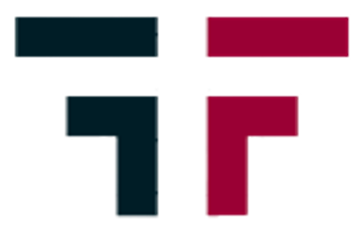
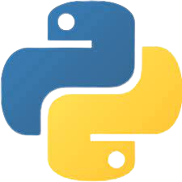
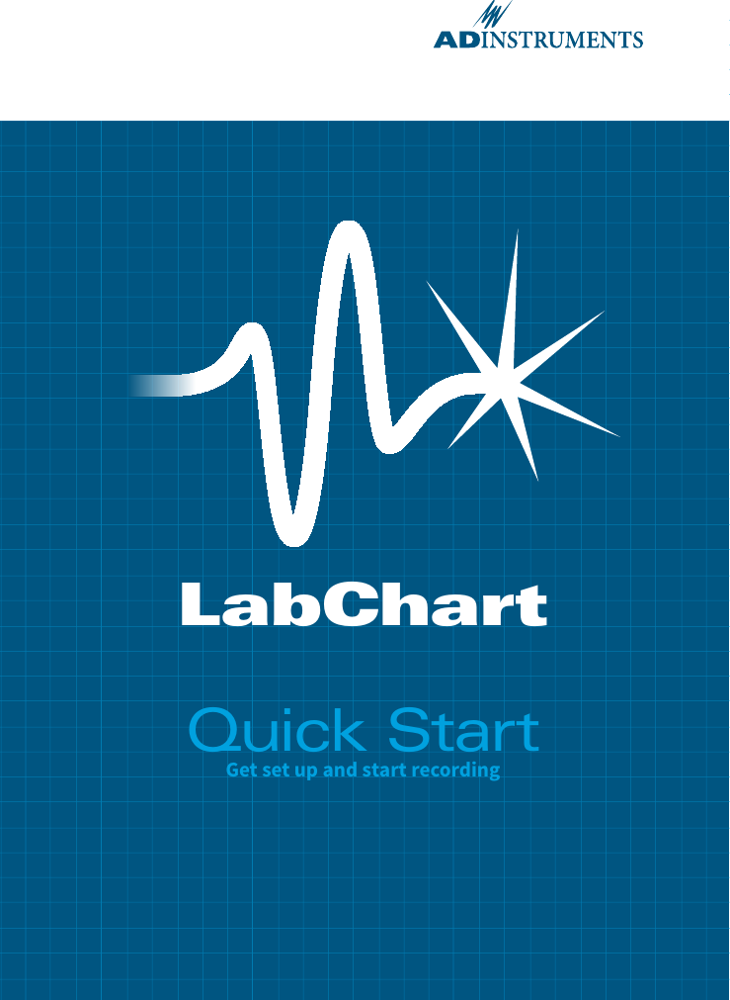
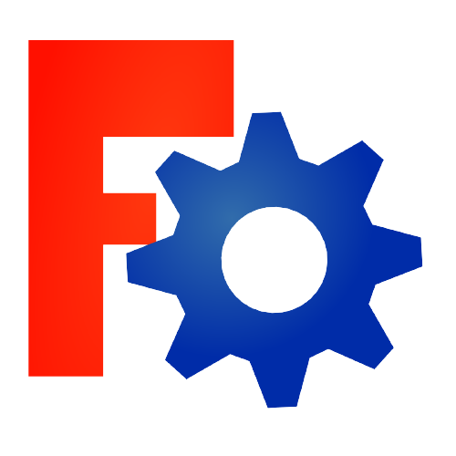
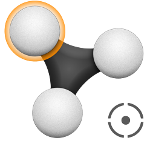
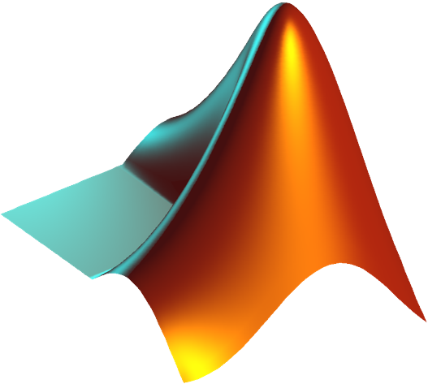

Profil
Formation
Portfolio
Contact
From
Field
BRUNO Joey
Sport/Data Scientist
24 ans
Reims (51)
06.80.95.89.22

CV en pdf
SoftWare




Langages & frameworks
Python
80%
HTML
60%
CSS
40%
JavaScript
25%
R
20%
 Matlab
20%
FORMATION
Apprentissage Autodidacte
333
Heures de code
1
Projets réalisés
OpenClassRooms
125
Heures de code
3
Certificats
Parcours
Data-Scientist
Projet Interreg NOMADe x laboratoire PSMS
Fév.2022 - Déc.2022
Scientist
Créateur & Coordinateur d'expérimentations
Mise en place de convention / dossier d'approbation
Rédaction d'articles scientifiques
Data-scientist / Data-visualisation
#
Data-analyst
Nettoyage, Lissage et Filtrage de données
Data-visualisation (graph, tableur, radar-chart...)
Création de web-questionnaire / web-report
Tests statistiques
MASTER - UFR STAPS de Reims
Ingénierie et Ergonomie des APS
Sept. 2020 - Juin 2022
Formation universitaire
Langage python / R / Matlab / A-frame / VBA
Etude & Analyse de poste - ergonomie du travail
Étude de la cinématique humaine (optitrack, accéléromètre, isocinétique...)
Introduction à la modélisation 3D (solidworks / freecad)
#
Apprentissage Autodidacte
Perfectionnement sur le langage python
Apprentissage des langages JavaScript, HTML & CSS
UFR STAPS - Licence
Sept. 2017 - Juin 2020
Formation universitaire
Science de la vie : Anatomie, Biomécanique, Physiologie
Science humaine : Histoire, Sociologie, Psychologie
Approche pratique & théorique des APS
Equivalence BAFA
 HTML
HTML
 CSS
CSS
 JavaScript
HTML
CSS
JavaScript
JavaScript
HTML
CSS
JavaScript